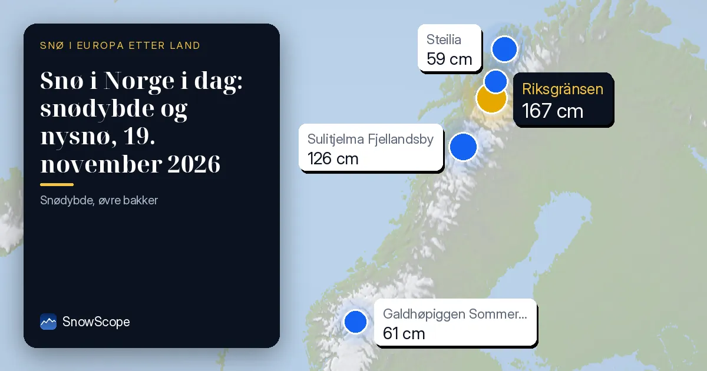

Snø i Norge i dag: snødybde og nysnø, 19. november 2026
Snø fra tidlig sesong ligger på 142 av Norges 155 skisteder per 19. november. Det dypeste grunnlaget er på Riksgränsen med 167 cm på toppen, og betydelig nysnø er varslet for dagene som kommer.
Se snøprognosen for Riksgränsen direkte i SnowScope-appenSnødybde, puddervarsler og 3D-kartet, gratis.
Snødybde på øvre bakker: hvem er dypest
Riksgränsen holder sterkest stilling med 167 cm på sine øvre bakker. Neste lag med skisteder—Sulitjelma Fjellandsby med 126 cm og Tromsø Alpinpark med 91 cm—tilbyr solid grunnlag. Under det når Galdhøpiggen Sommerskisenter 61 cm og Steilia 59 cm.
Disse tallene beskriver snøen på det høyeste terrenget ved hvert sisted. Lavere høyder har tynnere dekke, så et sisted med 60 cm på toppen kan ha mindre ved midtbakken. Når du bestiller, sjekk topphøyden og spør hvilke løyper som er åpne: dybden alene betyr ikke at heisen går.
| Skisted | Snødybde | Nysnø, 72 t | På vei, neste dager | Topp |
|---|---|---|---|---|
| Riksgränsen | 167 cm | 0 cm | 4 cm | 900 m |
| Sulitjelma Fjellandsby | 126 cm | 0 cm | 4 cm | 542 m |
| Tromsø Alpinpark | 91 cm | 6 cm | 16 cm | – |
| Galdhøpiggen Sommerskisenter | 61 cm | 0 cm | 7 cm | 2 180 m |
| Steilia | 59 cm | 1 cm | 4 cm | – |

Hva høyde forteller deg om snøtykkelse
Klatr 500 meter og snødybden omtrent dobles. Fra havet til 500 m er gjennomsnittlig 8 cm på tvers av kartlagt område, med 80% snødekke. Hopp til 500–1 000 m og du finner 18 cm, 95% hvitt. Ved 1 000–1 500 m er gjennomsnittet 24 cm og dekningen er fullstendig.
Over 1 500 m blir snøen dypere: 28 cm ved 1 500–2 000 m og 40 cm mellom 2 000 og 2 500 m. Dette høyde-og-dybde-mønsteret former hvor du kan skiste. Lave skisteder har flekket dekke nå; høye skisteder er mer sammenhengende. Mot slutten av november betyr det mindre, men tidlig sesong er høyde din venn.

Nysnø gjennom uken som kommer
Lørdag 21. november skiller seg ut: opptil 12 cm er varslet for de snøeste bakkene den dagen alene. De neste tre dagene (gjennom søndag 22. november) kan legge til opptil 24 cm totalt, noe som når 33 cm over hele uken. Denne timingen er gunstig—pudder som setter seg på en kald base gir gode skiforhold.
Riksgränsen og Sulitjelma Fjellandsby vil få lite på kort sikt (4 cm hver innen søndag), men Tromsø Alpinpark ser 16 cm komme, og Galdhøpiggen Sommerskisenter 7 cm. Bildet i regionen forbedres betydelig når hovedsnøen faller.
Hvordan denne sesongen sammenlignes med normalt
Per 19. november sitter Riksgränsen på 55 cm målt ved rundt 708 m høyde—kort av det typiske 61 cm for denne datoen. Sulitjelma Fjellandsby er på 48 cm mot normalt 52 cm. Tromsø Alpinpark, på bare 17 cm mot typisk 38 cm, ligger godt under gjennomsnittet; Galdhøpiggen Sommerskisenter er på 31 cm mot vanlig 84 cm.
Med andre ord har ingen av de fem referanseskisteder slått sitt sesonggjennomsnitt ennå. Dette er ikke uvanlig for midten av november. Sesongen utvikler seg etter planen: vintersneøhendelser vil fylle hullene. I tidligere år ankommer toppsnø på Riksgränsen vanligvis i tidlig til midten av april, så det er flere måneder med snøfokk foran oss.
Snødekning på tvers av landet
Hvit mark dekker 250 530 km² av Norges høye terreng—89% av alle kartlagte fjell og bakker. Dette dekket har holdt seg stabilt en uke, og svever nær 250 000 km². Snøen når ned til lave høyder og kysten; det er ingen snøfri sone.
Lyngen-alpene i nord er regionen som skiller seg ut, da de har mottatt opptil 16 cm nysnø i de siste 72 timene. På minst 46 820 km² av landet falt 5 cm eller mer i samme vindu. Mønsteret er flekket men tilstrekkelig til å holde mest terreng hvitt.
Naboer og utsikter
Sverige rapporterer 87% hvitt dekke med Björkliden som dypeste sisted på 139 cm; det har også opptil 19 cm i uken som kommer. Finland sitter på 55% dekning med Salla, det dypeste punktet, på bare 25 cm. Norges nordlige breddegrad og høyere fjell gir det en klar fordel så tidlig på sesongen.
Prognoser for dag 8 til 14 (slutten av november til tidlig desember) antyder opptil 25 cm på de snøeste bakkene, noe som opprettholder den oppadgående trenden. Hver snøhendelse utvider spekteret av skibar terreng, spesielt lavere ned hvor grunnlagene er tynne.
Tips til skiløpere
- Start høyt: 1 000 m og over tilbyr sammenhengende snø nå; lave skisteder er ennå flekket. Vent til lørdagens snø setter seg før du går på bratte løyper utenfor merket terreng.
- Sjekk snøskredvarselet fra lokale myndigheter før du forlater merket løyper i fjellterreng.
- Vinterdekk eller kjettinger er påkrevd for tilgang til høye skisteder; veier kan være glatte selv om prognosen ser tørr ut.
- Riksgränsen og Sulitjelma Fjellandsby er mest klar nå; Tromsø Alpinpark forbedres betydelig etter at varslet snø ankommer.
- Hvis du kan vente til etter søndag 22. november, vil reise- og skiforhold være bedre: veier vil være ryddet og nysnø vil ha bundet seg til grunnlaget.
Om tallene
Snødybdene for skistedene er det dypeste snødekket i de øvre bakkene på datoen som vises; de er anslag for et område, ikke en måling i ett punkt. Prognoser kan endre seg. Les alltid det offisielle snøskredvarselet før du kjører utenfor preparert løype.
Siter denne rapporten
For forskning, undervisning eller presse: tallene og diagrammene kan brukes fritt under CC BY 4.0 med denne kildehenvisningen.
SnowScope (2026), Snø i Norge i dag: snødybde og nysnø, 19. november 2026, https://snowscope.app/blog/nb/2026/11/norway-resorts-with-snow-19-november-2026.html, hentet 2026-11-19
SnowScope (Atlas Labs). (2026, November 19). Snø i Norge i dag: snødybde og nysnø, 19. november 2026. SnowScope snow reports. https://snowscope.app/blog/nb/2026/11/norway-resorts-with-snow-19-november-2026.html
BibTeX
@misc{snowscope2026norwayresortswithsnow19n,
author = {{SnowScope (Atlas Labs)}},
title = {Snø i Norge i dag: snødybde og nysnø, 19. november 2026},
year = {2026},
month = nov,
howpublished = {\url{https://snowscope.app/blog/nb/2026/11/norway-resorts-with-snow-19-november-2026.html}},
note = {Published 2026-11-19 13:11 UTC; accessed 2026-11-19}
}· CC BY 4.0 · Metoder, data og verktøy →
Riksgränsen: snø og temperatur etter høyde, i vinter sammenlignet med i fjor (verktøy) →
Følg Riksgränsen
Gratis: en melding når nysnø er på vei, og prognosen hver morgen.